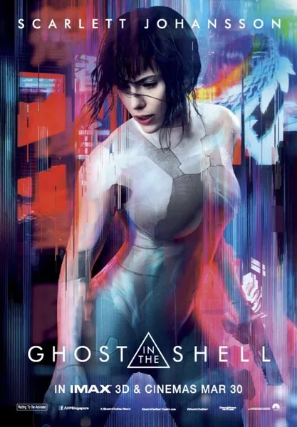

Фильм · 2017 · ИИ, Киберпанк
Призрак в доспехах
Ghost in the Shell
В недалеком будущем грань между человеком и программой практически стирается. Майор — оперативник с полностью кибернетическим телом — охотится на хакера, который взламывает не компьютеры, а человеческий разум. Каждая новая зацепка заставляет ее усомниться в собственной личности: кто она такая, если почти все в ней можно заменить, а воспоминания — загрузить извне? Игровая экранизация легендарной манги Масамунэ Сиро, поднимающая вопросы о памяти, душе и праве распоряжаться собственным сознанием.
In the near future the line between a person and a program is almost gone. The Major, an operative with a fully cybernetic body, hunts a hacker who breaks into human minds instead of computers. Every clue shakes her own identity: who is she if nearly everything in her is replaceable and memories can be uploaded from outside? A live-action take on Masamune Shirow's legendary manga about memory, the soul and the right to one's own consciousness.